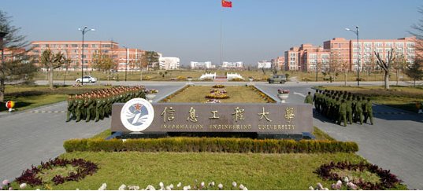
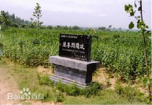

张倩倩的个人主页
我的学校
河南大学坐落在历史文化名城、八朝古都开封。这里曾是河南贡院的所在地，1903、1904年最后两场全国会试在这里举行，上千年的科举制度在这里划上句号。1912年，以林伯襄为代表的一批河南仁人先贤，在欧风美雨和辛亥革命胜利的曙光中创办了河南留学欧美预备学校，成为当时中国的三大留学培训基地之一。后历经中州大学、国立第五中山大学、省立河南大学等阶段，1942年改为国立河南大学，成为拥有文、理、工、农、医、法等6大学院的综合性大学，是当时学术实力雄厚、享誉国内外的国立大学之一。新中国成立后，经院系调整，河南大学农学院、医学院、行政学院分别独立设置为河南农学院、河南医学院、河南行政学院，水利、财经等院系也先后调入武汉大学、中南财经政法大学等高校，校本部更名为河南师范学院。后又经开封师范学院、河南师范大学等阶段，1984年恢复河南大学校名。2008年10月17日，河南省人民政府和教育部签订共建协议，河南大学正式进入省部共建高校行列。2016年9月，学校入选国家“111计划”。2017年9月入选“双一流”建设高校名单。
我的家乡
裴李岗文化是中国河南省的新石器时期文化，是目前中原地区发现最早的新石器时代文化之一，由于最早在河南新郑的裴李岗村发掘并认定而得名。裴李岗文化是汉族先民在黄河流域创造的古老文化，是华夏文明的重要来源。 裴李岗文化是分布于河洛地区的一支新石器时代中期文化。依据豫中地区6处该类文化 的典型遗址的材料, 可将其分为早、 中、 晚三期六段, 基本上代表了目前发现的裴李岗文化的各个不 同发展阶段。同时依据对已发表的不同遗址14C测年数据的分析, 把裴李岗文化的绝对年代大体推定在距今8500年 ～ 7000年。在8000年前，汉族的先民们已开始在中原地区定居，从事以原始农业、手工业和家畜饲养业为主的氏族经济生产活动。裴李岗遗址的发现填补了我国仰韶文化以前新石器时代早期的一段历史空白。以原始农业、畜禽饲养业和手工业生产为主，以渔猎业为辅的原始氏族社会。裴李岗文化的分布范围，以新郑为中心，东至河南东部，西至河南西部，南至大别山，北至太行山。重要遗址还包括临汝中山寨遗址、长葛石固遗址等。综合中国社科院考古研究所放射性实验室对裴李岗遗址出土的木炭标本测定的年代结果，裴李岗文化的年代距今约7000-8000年，为新石器时代早期的文化。
